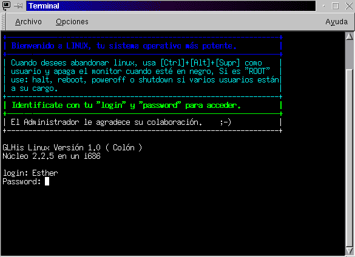
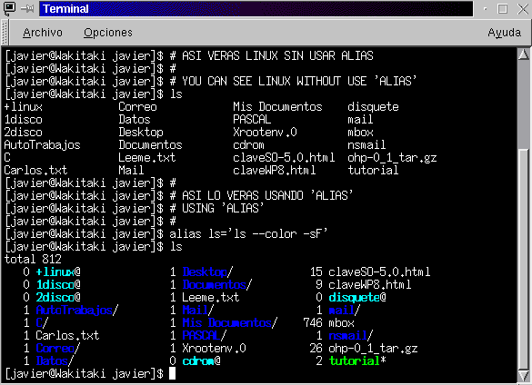
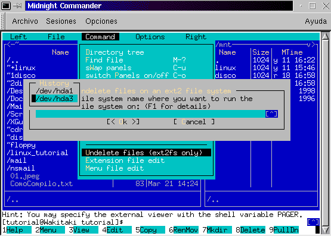

Para hacerte una demostración haremos lo siguiente:
* Suelta todas las teclas que tengas presionadas.
Escribe en login 'root' y en password , la clave de acceso que tengas.(Si procede)

Verás los ficheros que estén en ese directorio. Esos ficheros pueden ser:
ejecutables (binarios), de texto, directorios, scripts (conjunto de comandos dentro de un fichero de texto).
(Si alguna vez te encuentras con un fichero y no sabes que es, escribe: file nombre_del_fichero)
Claro, que esta no son formas de ver los ficheros, ¿habría alguna forma de identificarlos de un vistazo?
USAR COLORES... continua el tutorial...
Pero... claro, dirás que si siempre hay que escribir eso... (yo también), apaga y vámonos, porque aunque hay que reconocer que es bonito, hay que escribir muchas letras, incluso hasta para uno que sepa MECANOGRAFÍA.
Una de las muchas formas que tiene Linux para ahorrar tiempo es usando un 'alias', de forma que cuando hagamos referencia al alias, se escriba el comando que queramos con todos sus parámetros, este es el ejemplo que tienes que aprender (todos los alias hacen referencia a la shell 'bash', que es la que seguramente tengas por defecto):
[root@localhost /root]$ alias ls='ls --color -s'
ahora, escribe ls
[root@localhost /root]$ ls
¡¡SORPRESA!!

Puedes hacer que cada vez que arranques se vea en colores tu terminal, pero eso se verá en el tema de Configurando tu fichero de usuario: .bashrc, y .bash_profile
Pero si lo que quieres es que esa (y otras) opciones puedan disponerlas
todos los usuarios deberás configurar el fichero /etc/bashrc
En Linux existe una forma muy sencilla de crear directorios. Para ello, simplemente has de escribir mkdir NombreDirectorio, por ejemplo: mkdir carlos creará un directorio llamado carlos. Un punto importante es recordarte que Linux es sensible a las mayúsculas y no es lo mismo escribir mkdir carlos que mkdir Carlos ni CARLOS. Estos son directorios diferentes, y, por tanto, para acceder a ellos habrás de escribirlo tal y como los llamaste.
Si has venido del DOS, (Y si no has venido no importa), te acordarás que para crear directorios se usaba el comando: md, que es el acrónimo de Make Directory (MD), y dirás que es mas corto, pues te recordamos que en Linux existe 'alias', así que usando el alias de la forma siguiente podrás obtener la misma comodidad
alias md='mkdir'
Ahora para crear el directorio carlos. puedes hacer:
mkdir carlos
o también
md carlos
Prueba (dependiendo si estás en un terminal (pantalla de texto)
o en X-Window) de la forma expresada en Mostrar ficheros
y prueba a crear los directorios: Amigos, Familia, Banco, Internet,
Trabajos, Estudios...
Prueba: a crear tanto con mkdir o con md, es decir crea mkdir Amigos,
md
Familia...
---
Para crear FICHEROS DE TEXTOS, como no, nuestras queridas cartas...
Aquí puedes utilizar, VARIOS procesadores de textos, entre todos
ellos destacan estos tres:
Si no tienes el JOE instalado haz esto (deberá estar en formato
.RPM) (ejemplo para las distribuciones: SuSE, RedHat o GLHis) para instalarlo
desde el CD-ROM
Si no te aclaras, también podrás meter el CD-ROM y
reiniciar como cuando instalaste por primera vez Linux y elegir la opción
(Upgrade=Actualizar) y seleccionar el paquete JOE.
El joe, es un SENCILLISIMO editor de textos, al estilo WordStar de Microsoft, o Editor de Digital Research, algo mas potente, pero hay que buscar mucho para ver todas sus cualidades.
Ejemplos:
* Crear un documento de texto
joe carta.txt
* Salir Guardando el documento
[Ctrl]+[K]+[X] <--> Recuerda que significa: Pulsar [Ctrl], sin soltarla pulsar [K], y sin soltar ninguna de las dos, pulsar [X]
* Salir SIN Salvar el documento
[Ctrl]+[C]
Preguntará si desea PERDER LOS CAMBIOS, para lo que habrá que pulsar: [Y], o [N] PARA NO PERDER LOS CAMBIOS
* AYUDA DE JOE
[Ctrl]+[K]+[H]
Activa la visualización de la ayuda
[Ctrl]+[K]+[H]
Desactiva la visualización de la ayuda
(En ti queda aprender el resto)
Para obtener más información puedes escribir desde un
terminal: man joe, si lo que quieres es información a cerca del
joe, man vi, o man vim, o man emacs, dependiendo de la información
de desees obtener.
Te recuerdo que la estructura de directorios de Linux es muy importante,
por lo que NO borres ningún directorio que no este bajo tu árbol
de directorios. Por ejemplo, yo podré borrar todo lo que este bajo
/home/carlos, porque me pertenecen esos ficheros, pero no podré
borrar los ficheros que estén fuera de él, entre otras cosas
porque a menos que sea el superusuario (root) no me dejarán por
los permisos.
Para cambiar el nombre del directorio carlos a javier, habrá que escribir:
mv carlos javier
El mismo comando se usa para renombrar tanto FICHEROS como DIRECTORIOS.
Por ejemplo queremos MOVER el fichero: 'carta_a_pepe.txt' a /home/javier/cartas_a_amigos/, pues escribimos:
mv carta_a_pepe.txt /home/javier/cartas_a_amigos/
PERO, TAMBIÉN CON EL MISMO COMANDO SE PUEDE MOVER UN DIRECTORIO, por eso, es aconsejable no utilizar los comodines cuando ESTÉS COMO ROOT, y peor, si estás en la raíz de directorios '/', (Que, a propósito, cuando creemos los perfiles de usuario, siempre deberás entrar como el usuario creado, y usar sólo ROOT, para acceder a las unidades...)
Por ejemplo:
mv cartas_a_amigos/ / (mueve "cartas_a_amigos"
a la raíz)
Si alguna vez estas en la raíz, NI SE TE OCURRA hacer (Estando como root):
mv * /algún_directorio
(ls / )
Ya que en ese momento TE ESTAS CARGANDO EL SISTEMA, y tendrás
que entrar con un disco de mantenimiento, además de lo sufrido que
supone su (nueva) colocación.
pwd <-Te dirá tu ruta actual
PWD, es el mismo comando que el comando de Unix para mostrar la ruta "CWD", hace un: "Current Work Directory"
cd
Sin parámetros regresara a "casa"
(Este comando, hace lo mismo que si escribes: "cd ~", o "cd
$HOME", y de hecho, esto es muy utilizado para regresar a cualquier
directorio del dueño que en ese momento esté usando el ordenador,
por ejemplo si quisiera ir al directorio /home/javier/programación/C,
y estuviera como el usuario "javier", escribiría (independientemente
de yo donde estuviera) cd ~/programación/C, ahorrando evidentemente
tener que escribir la sentencia "/home/javier")
cd /
Independientemente del directorio donde te encuentres ira directamente
a la raíz
cd ..
Accederá a la carpeta/directorio inmediatamente anterior
El árbol de directorios se puede ver como:
(intenta hacer un alias para cls)
Limpiar la pantalla no requiere parámetros algunos, por lo que
es bastante fácil de recordar, clear significa en inglés
"limpiar", mientras que cls, es el acrónimo inglés de "Clear
Screen", "Limpiar la pantalla"
Un sistema de ficheros, no es más que una partición
en tu disco duro (que puede ser única) la cual tiene un formato,
y el formato es la forma de colocar los archivos.
Por lo que para que un Sistema Operativo solo entienda su sistema de ficheros, como por ejemplo pueden ser: Windows, MS-DOS, OS/2, etc., etc... cuando se carga el sistema, automáticamente también cargan su sistema de ficheros, y trabajan con su sistema de ficheros, única y exclusivamente (hasta que no se le añadan módulos al kernel o núcleo del Sistema Operativo).
Linux, carga automáticamente su Sistema de ficheros, al cargar,
se le denomina "montar", en ese momento, al igual que han hecho otros sistemas
operativos puedes empezar a trabajar con tu sistema de ficheros, pero Linux,
al contrario que otros sistemas puede además acceder a Sistemas
de Archivos que no son suyos, es decir, puedes desde Linux, acceder a tu
partición de MS-DOS, Windows, OS/2, etc., etc. Es más, puedes
acceder a tu disquete o disquetes que te hayan pasado que estén
formateados en otros sistemas, por ejemplo de un Mac.
| ext2 | Navita de Linux |
| NFS | Network File System |
| msdos | Sistemas D.O.S. |
| vfat | Sistemas Windows |
| iso9660 | Sistema de ficheros de CD-ROMs |
| auto | Intenta montar cualquier Sistema |
| (más sistemas de ficheros) | (más sistemas operativos) |
Para montar tu disquete haz:
(En este caso, deberás asegurarte de que existe el directorio
/mnt/floppy, si no existiera créalo usando: mkdir /mnt/floppy)
Ahora estás viendo tu disquete.
"mount -t vfat"
Evidentemente, como habrás podido observar, DEBEN de existir
los directorios win, dos, cdrom, floppy... dentro del directorio /mnt/,
si no existieran deberás acceder a /mnt/ y crearlos, haz:
Un disco duro, puede tener hasta 4 particiones
cd /mnt/[directorio que haga referencia a la unidad montada y existente en el directorio mnt]
Ejemplo
cd /mnt/floppy
Accederá a tu disquete.
Lo puedes hacer fácilmente desde mc, o haciendo ln -s fichero_a_enlazar fichero_enlace.
Para desmontar las unidades bastará con escribir:
umount /dev/[dispositivo montado que se quiera desmontar]
Ejemplos:
Con este objetivo se hizo en linux comandos como: alias, y también por el mismo motivo se hizo comandos para crear ejecutores de tareas (scripts)
En nuestro caso, lo que nos interesa será la automatización de tareas a través de alias, por lo que observa los ficheros .bash_profile y .bashrc que a continuación se presentan e intenta modificar tu .bash_profile y .bashrc con la misma intención.
Y ya estarás en un entorno amigable para tu gestión de
ficheros.

Te decimos que muchos programas comerciales (los cuales aquí no mencionaremos) de otros sistemas operativos están basados en mc de Linux aunque ellos los vendan como software original.
